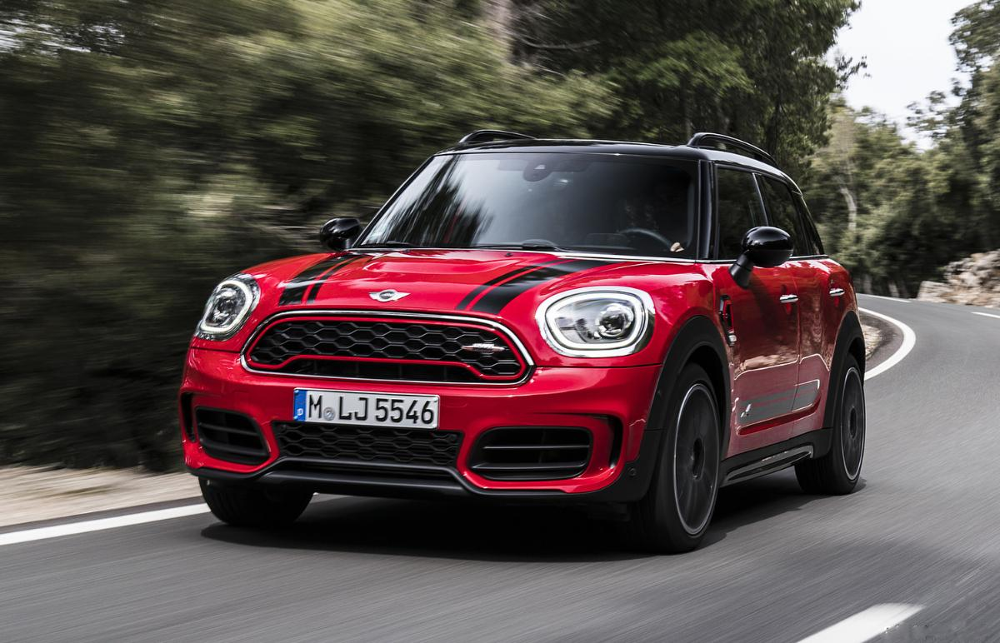

minicooper

15-17 წლის წინ თბილისის ქუჩებში Mini Cooper-ის გამოჩენამ ჩვენი ყურადღება მაშინვე მიიქცა. მან ახალგაზრდების გული მალევე დაიპყრო, მაგრამ ყველა ვერ ახერხებდა მის შეძენას, რადგან ძალიან ძვირი ღირდა. დღეს პირველი თაობის Mini Cooper-ის ფასი საკმაოდ ხელმისაწვდომია, ყველას შეუძლია მისი შეძენა, მაგრამ გამომდგარიაა ? ამაზე კი დღევანდელ სტატიაში ვისაუბრებ. საქართველოში, პირველი თაობის 2002–2006 წლის, Mini Cooper-ის (R50/52/53) ფასი: $ 2,100-3,700-მდე მერყეობს, ამ ფასად შენ ნახავ მინის, როგორც 111.000 კმ, ასევე 186.000 გარბენითაც. ფასი ტრადიციულად დამოკიდებულია, გამოშვების წელზე, გარბენზე და კოომპლექტაციაზე. მინის ალტერნატივაა: 2006 წლის Toyota Vitz, Fiat 500-ის ფასი 3,900 $-დან იწყება. ძრავა და გადაცემათა კოლოფი პირველი თაობის Mini Cooper-ი ხელმისაწვდომია, როგორც ბენზინის, ასევე დიზელის ძრავებით თუმცა საქართველოში ყველაზე გავრცელებული ეს ძრავებია: 1.6 (90 ცხ.ძ.) 1.6 (116 ცხ.ძ.) 1.6 (170 ცხ.ძ.) supercharged რაც შეეხება გადაცემათა კოლოფებს აქ ცოტა მეტი ინფორმაციის მოწოდება დამჭირდება. მექანიკა - 2002-2004 წლებში მინი, Midlands-ის 5 საფეხურიანი მექანიკით გამოდიოდა, ის საიმედოობით დიდად არ გამოირჩევა, ყველაზე ხშირად სინქრონიზატორები და კულისა (rocker) უფუჭდება. 2004 წლიდან მინიზე დააყენეს ბევრად ხარისხიანი Gertrag-ის 5 და 6 საფეხურიანი კოლოფები, მათი სინქრონიზატორების რესურსი 140,000 კილომეტრია. CVT 2002-2006 წლებში მექანიკის გარდა, მინის ყიდვა შეგეძლო ვარიატორული (CVT) გადაცემათა კოლოფითაც. რაც არ უნდა პარადოქსული იყოს თუ წყნარად ივლი და არ დაიწყებ „შუმახერობას“ ეს კოლოფი ბევრად გამძლეა, ვიდრე Midlands-ის 5-იანი მექანიკა, მისი რესურსი, 200,000 კილომეტრია. მთავარია ყოველ 35-40,000 კილომეტრის გავლისას კოლოფში ზეთი შეუცვალე. თუ რომელიმე ბრენდირებულ სერვისცენტრში, ოპერატორმა ვერ მოგიძებნა ზეთი, მარტივად ზეთის ქარხნული კოდი: 83 22 0 136 376 მიაწოდე და დროსაც დაზოგავ. ავტომატიკა 2002-2006 წლებში ხელმისაწვდომი იყო 6 საფეხურიანი ავტომატიკებიც, ამ კოლოფებზეც იგივე შემიძლია ვთქვა, რაც ზემოთ დავწერე ვარიატორულზე. ყველაფერი დამოკიდებულია თუ რამდენად სწორ ექსპლუატაციას უწევ. ამ კოლოფსაც, ყოველი 35-40,000 კილომეტრის გავლისას ზეთი უნდა შეუცვალო, წინააღმდეგ შემთხვევაში სოლენოიდის (Solenoid) შეცვლა მოგიწევს და ა.შ.